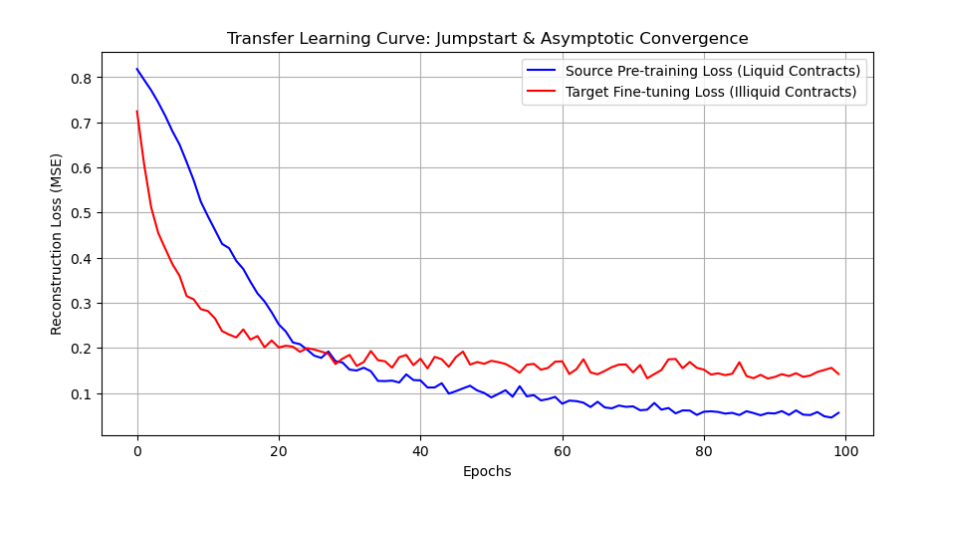

Joint Modeling of Futures Trading Volume
← Back to Projects
Research Focus
Joint Modeling of Zero Values, Heterogeneity and Information Sparsity in Futures Trading Volume investigates trading occurrence, positive trading intensity and liquidity differences across futures contracts.
Data & Statistical Modeling
Cleaned and processed over two million daily observations, including missing value imputation, variable construction and distribution diagnosis. Identified 28.70% zero-trade observations, significant right-skewness and overdispersion.
Constructed a two-stage Hurdle model to estimate trading occurrence separately from volume conditional on positive transactions, and introduced a negative binomial model for robustness testing.
Market Structure & Transfer Learning
Built a Variational Dirichlet Process Gaussian Mixture Model (VDP-GMM) with Scikit-learn to cluster 8,790 futures contracts. Identified six major latent market structures, including high-liquidity, intermittent-trading, low-liquidity and nearly dormant contract types.
Developed an autoencoder-based transfer learning pipeline in PyTorch to transfer feature representations from highly active contracts to low-activity contracts. The findings support liquidity risk identification, contract management and market anomaly monitoring.